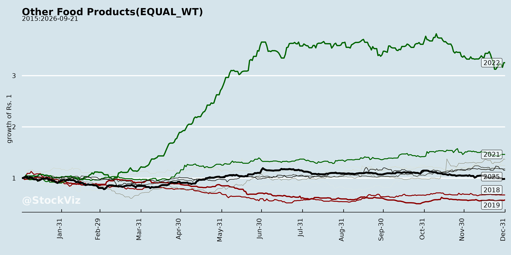
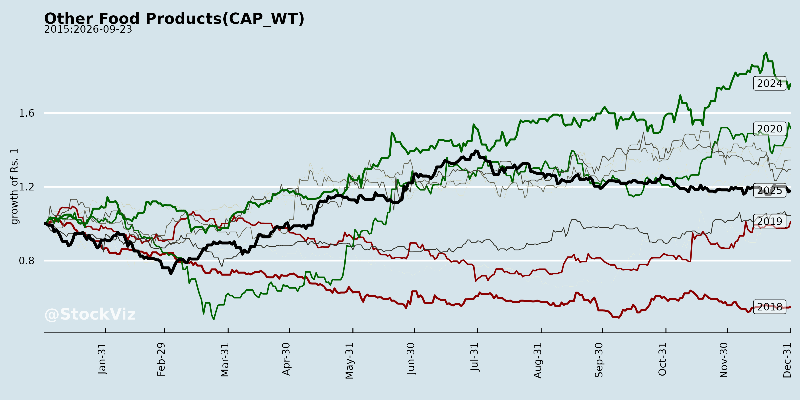
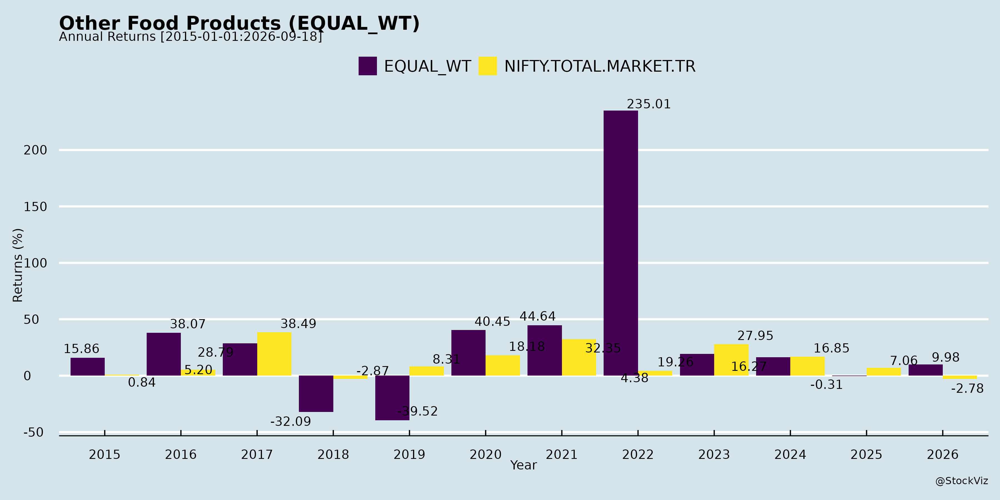
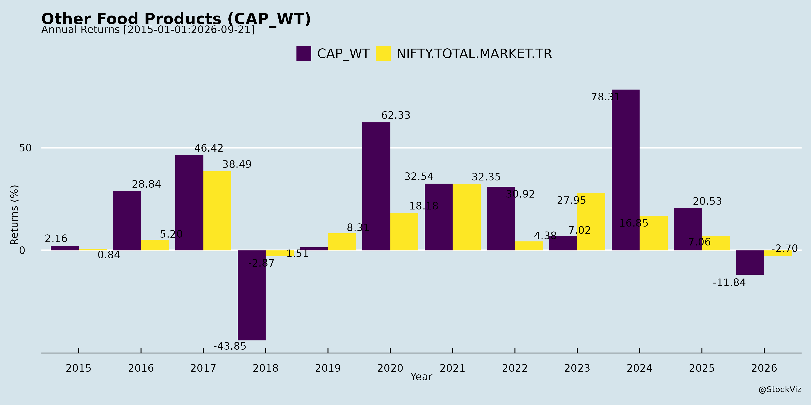
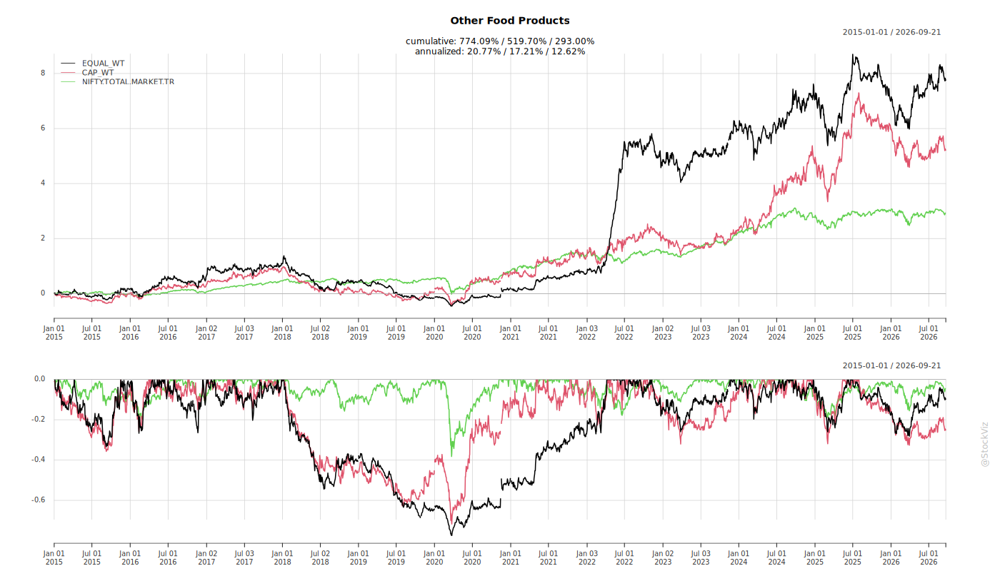
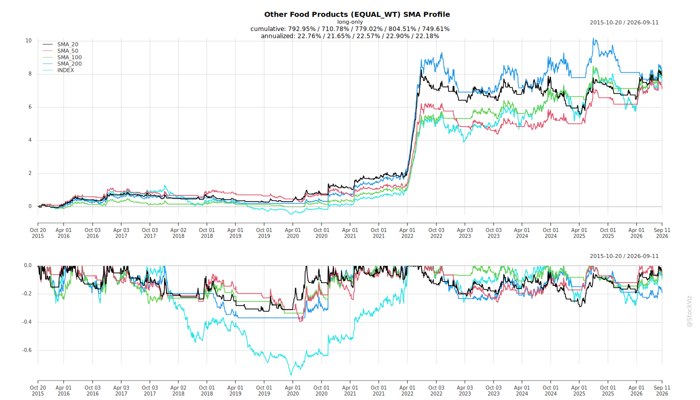
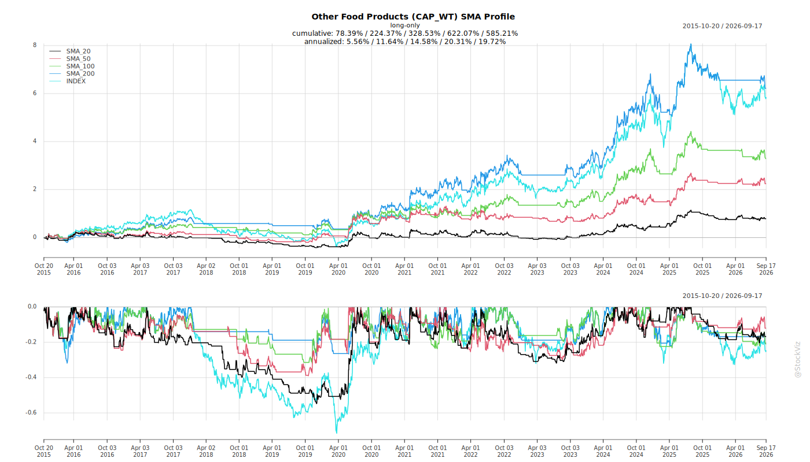
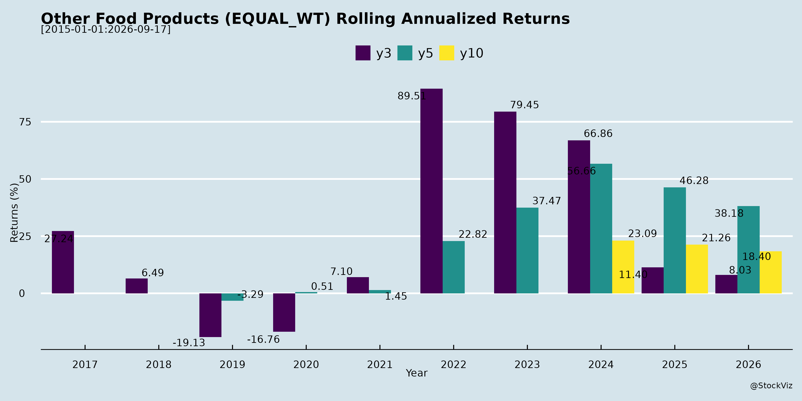
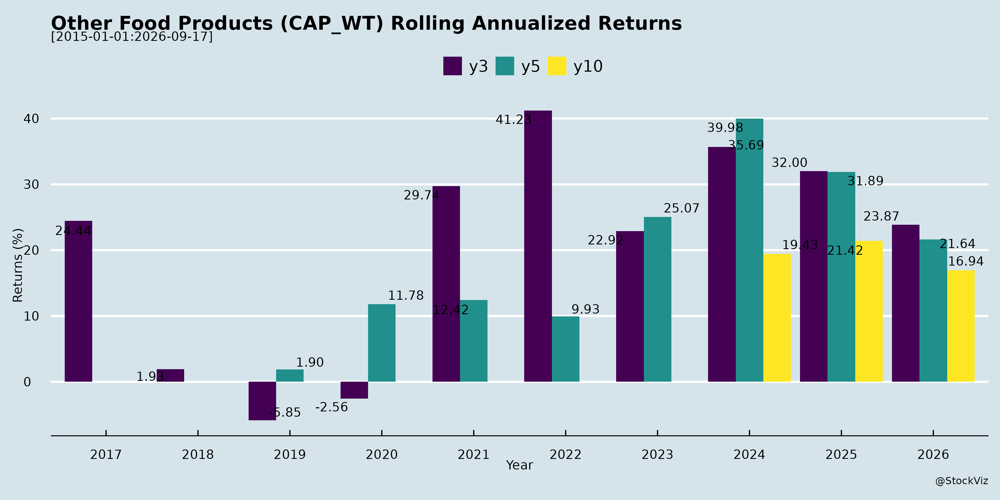

Annual Returns




Cumulative Returns and Drawdowns

SMA Scenarios


Current Distance from SMA
Rolling Returns


EBIT (% of Industry Total)
Revenue (% of Industry Total)
AI Summaries
Analyst
asof: 2025-11-27
Analysis of Indian Other Food Products Sector
Using the provided earnings transcripts (E.I.D. Parry, Krishival Foods, Orkla India; Manorama Industries disclosure is non-substantive), the “Other Food Products” sector (encompassing sugar/refinery, ethanol/distillery, consumer staples like pulses/sweeteners, nutraceuticals, nuts/dry fruits, ice cream, spices, and convenience foods) shows a mixed outlook. The sector benefits from macro tailwinds but faces commodity/policy headwinds. Below is a structured analysis:
Headwinds (Challenges)
- Commodity Price Volatility/Deflation: Sharp declines in spices (22-25% over 2 years, e.g., chilli), pulses (30-38% drop in toor/urid dal), and sugar (softening due to oversupply). Companies like EID Parry and Orkla passed on cuts, impacting revenue (e.g., Orkla’s spices revenue flat despite 6% volume growth).
- Policy & Regulatory Pressures: Sugar oversupply (India’s stocks to 8 MMT), delayed exports (>1 MMT needed), extra cane pricing (INR 50/MT in Karnataka). Ethanol: Excess capacity (2,000 CrL vs. 1,100-1,300 CrL bids), grain shift (70% tenders), no MSP/price hikes in 2 years, lower allocations (e.g., EID Parry at 69% of bids).
- GST/Transition Costs: Disruptions (7-10 days billing halt, MRP relabeling, promotions); impacted 25% of Orkla’s portfolio (e.g., Gulab Jamun). Recent cuts to 5% (nuts/ice cream) are positive but transitionary.
- Segment-Specific Weakness: Consumer products degrowth (EID Parry: 30% YoY due to quotas, low pulses prices); nutraceuticals one-offs; refinery breakeven risks (white premiums $80-110 vs. $115-120 needed).
- Distribution/Channel Shifts: EID Parry’s channel consolidation impacting Q3 volumes; quick commerce competition requires investment.
Tailwinds (Positive Factors)
- Macroeconomic Support: Low food inflation (negative), tax relief, interest rate cuts, GST 2.0 benefits (5% on nuts/ice cream). Rising incomes, Tier 2-4 urbanization, post-COVID premium/nutritional demand (e.g., Krishival’s nuts growth).
- Volume & Category Momentum: Strong volumes (Orkla: 7.7-8%; EID Parry ethanol 90%+ utilization). Convenience foods (19-26% growth), sweets/breakfast innovations, digital commerce (49% growth, 10% of sales).
- GST Reductions: Boosts affordability/demand for nuts, ice cream (Krishival passed 100% benefit, expects organized shift).
- Exports & Diversification: Orkla (21% sales, #1 spice exporter); Krishival (Singapore: 1M SGD, expanding to Japan/US); EID Parry nutraceuticals consolidation.
- Operational Efficiencies: EBITDA margins resilient (Orkla 16.9-17.8%; Krishival 14.5%). Capacity expansions (Krishival nuts to 40 MT/day, ice cream to 100% utilization by FY28).
Growth Prospects
- High Double-Digit Potential: Krishival targets triple-digit revenue by FY27-28 (nuts/ice cream ~50:50 split). Orkla: Penetration (e.g., Karnataka per capita Rs110 → higher via 260 occasions), innovations (40% pure spices growth), convenience platforms (sweets +26%). EID Parry: Consumer recovery Q3-Q4, nutraceuticals stabilization.
- Category Expansion: Premiumization (local flavors, e.g., Orkla’s regional chillis); convenience (ready-to-eat batters, 5-min breakfasts); staples (pulses stabilization post-low crop).
- Geographic/Digital Push: Tier 2-4 focus (Krishival: 200+ towns); quick commerce (70% of digital sales); exports (GCC, Singapore, Japan/US).
- Volume-Led Growth: Unorganized-to-organized shift (60% spices unorganized); ethanol policy tweaks expected.
Key Risks
- Commodity/Crop Dependency: Weather/yields (e.g., sugar +15%, but floods in UP/Maharashtra); further deflation/inflation pass-through limits.
- Policy Uncertainty: Ethanol pricing/MSP delays, sugar export notifications, blending targets (20% vs. late-20s capacity).
- Capacity Overhang: Ethanol (industry-wide); ice cream profitability lag (Krishival PAT contribution from FY27).
- Competition/Margins: Unorganized (60% spices), imports (pulses), grain ethanol shift. Working capital strain (e.g., EID Parry refinery loans down but short-term persists).
- Execution: Channel disruptions, GST transitions, one-offs (insurance, PLI cuts).
Summary
The Indian Other Food Products sector faces near-term headwinds from commodity deflation (spices/pulses/sugar), policy delays (ethanol/sugar), and transitions (GST), pressuring revenues/margins (e.g., flat spices growth despite volumes). However, strong tailwinds from macro recovery, GST cuts, premium/convenience demand, and digital exports position it for 15-25%+ growth (volume-led, Tier 2-4, innovations). Prospects are robust (e.g., Krishival triple-digit, Orkla 8% volumes), but risks center on policy/commodities (high probability/impact). Overall, positive skew for 2-3 year horizon if policies align; focus on resilient players with diversification (e.g., convenience/nuts > staples). Sector EBITDA ~15-18%, with outperformance in premium segments.
General
asof: 2025-11-27
Summary Analysis: Indian Other Food Products Sector
(Based on inputs from Krishival Foods (nuts/ice cream), Manorama Industries (specialty fats/CBE), Megastar Foods (wheat flour/semolina/bran), and E.I.D. Parry (limited insights on promoter changes). These represent processed FMCG segments like premium nuts, ice creams, specialty flours, and exotic fats/butters. Sector shows robust growth amid premiumization and domestic demand, but faces commodity volatility.)
Tailwinds (Positive Drivers)
- Strong Demand & Revenue Momentum: H1 FY26 highlights robust top-line growth – Krishival ₹116 Cr (+YoY via nuts 77%, ice cream 23%); Manorama Q1 standalone ₹290 Cr (+117% YoY); Megastar Q2 ₹138 Cr (+53% YoY, H1 +67%). Institutional clients (Nestle, ITC, HUL) and Tier II/III penetration fuel B2B sales.
- Capacity Expansions & Efficiency: Krishival scaling nuts to 40 MT/day, ice cream to 1 lakh L/day (potential +₹600 Cr); Megastar at 710 MT/day (65% utilization); Manorama integrated processing. Automation, solar power, and cost optimization boosted EBITDA (Krishival 3.4x since FY22; Megastar +104% YoY to 6.8%).
- Favorable Market Dynamics: Premium segments growing – dry fruits 6-7% CAGR to USD 3.8B by 2033; ice cream 16.7% CAGR to ₹1,078 Bn by 2033. Health consciousness, urbanization, e-commerce/modern trade (Amazon, Blinkit), and certifications (FSSAI, HACCP, RSPO) support premiumization.
- Financial Resilience: PAT growth (Krishival +47% FY25; Manorama Q1 ₹50 Cr); improving margins via scale (Megastar targeting double-digit EBITDA).
Headwinds (Challenges)
- Commodity Volatility & Seasonality: Wheat/nut prices fluctuate (Megastar: inventory ₹137 Cr H1 FY26 vs. ₹38 Cr FY25 due to April-May procurement; Q1 working capital peaks, dips 50% in Q2). Crop dependence delays margin predictability.
- High Costs & Debt: Elevated interest from Capex (Megastar: long-term debt ₹62 Cr, short-term ₹111 Cr); power/fuel key costs. Krishival notes raw material pressures despite efficiencies.
- Regulatory/Export Constraints: Wheat export ban since 2022 limits Megastar; broader food safety/export norms add compliance burden.
- Margin Pressure: PAT margins modest (Megastar 1.7% Q2; Krishival 7-9%); customer concentration (Megastar top 10 clients 60%).
Growth Prospects
- Volume & Geographic Expansion: Pan-India/Tier II-III push (Krishival 10K+ nut, 25K+ ice cream touchpoints; 102+ cities); exports via subsidiaries (Manorama in Africa/LatAm/ME); Megastar FY26 ₹500 Cr, FY27 ₹600 Cr (+15% YoY).
- Product Diversification: Krishival 45+ nut SKUs, 148 ice creams (flavored/premium); Megastar value-added/specialty flours (pizza/chocolate); B2C entry (Megastar Horita brand FY27). Manorama CBE focus.
- Margin Uplift & Utilization: 80-100% capacity ramps (Megastar next year); EBITDA to double-digits via automation/R&D (Krishival innovation hub).
- Sector Tailwinds: ₹97% FY25 growth for Krishival; cold-chain/modern retail boosting ice cream year-round; potential wheat export reopening.
Key Risks
| Commodity/Supply |
Wheat/nut price swings, seasonal inventory buildup. |
Diversified sourcing (Krishival 9 countries); storage (Megastar 50K MT). |
| Customer Concentration |
Top clients dominate (Megastar 60%). |
B2C diversification; new products/contracts. |
| Debt & Liquidity |
Capex-driven borrowing (Megastar ₹173 Cr total debt). |
Internal accruals/equity; EBITDA growth for repayment. |
| Regulatory |
Export bans, food safety audits. |
Certifications (FSSAI, HALAL); compliance focus. |
| Execution |
Capacity utilization delays; competition in premium FMCG. |
Long-term contracts; R&D/automation. |
| Macro |
Crop failures, inflation. |
Domestic focus; cost optimization. |
Overall Outlook: Sector poised for 15-50%+ growth (guided), driven by domestic premiumization and expansions. Tailwinds from demand/capacity outweigh headwinds, but monitor commodities/debt. Risks moderate; strong client ties and certifications provide buffers. Positive for investors eyeing processed foods.
Investor
asof: 2025-11-27
Analysis of Indian Other Food Products Sector
Based on the provided earnings transcripts from E.I.D. Parry (sugar, ethanol, consumer products, nutraceuticals), Krishival Foods (nuts, dry fruits, ice cream), Orkla India (spices, convenience foods), and ancillary disclosure from Manorama Industries, the sector exhibits a mix of resilience and challenges. Key themes include commodity volatility, policy dependencies, premiumization, and regional focus. Below is a structured analysis of headwinds, tailwinds, growth prospects, and key risks.
Headwinds (Challenges Pressuring Margins and Growth)
- Commodity Deflation/Volatility: Sharp declines in spice prices (22-25% over 2 years in Orkla), sugar softening due to 15% higher Indian output and global surplus (E.I.D. Parry). Pulses prices down 30-38% (E.I.D. Parry, Krishival).
- Policy and Regulatory Pressures: Ethanol shift to grain-based (70% tenders), excess capacity, lower allocations (E.I.D. Parry); Karnataka’s INR 50/MT extra cane price (E.I.D. Parry); GST 2.0 transition costs (Orkla: 7-10 days billing disruption, MRP changes).
- Segment-Specific Weakness: Consumer products degrowth 30% (E.I.D. Parry: quota curbs, low pulses realization); spices revenue flat despite 6% volume growth (Orkla); ice cream scaling phase with limited PAT contribution (Krishival).
- Overcapacity and Competition: Ethanol industry overcapacity (2,000 CrL vs. 1,100-1,300 CrL demand); unorganized spices at 60% market share (Orkla).
Tailwinds (Supportive Factors Driving Resilience)
- Macro Recovery: Lower food inflation (negative), tax relief, GST cuts to 5% on nuts/ice cream (Krishival: full pass-through boosts demand); festive/seasonal uplift (Orkla sweets +26%).
- Volume-Led Growth: Strong volumes (Orkla: 7.7% Q2, 8% H1; E.I.D. Parry sugar recovery 7.97%; Krishival revenue +50% Q2).
- Digital/Quick Commerce Boom: 49% growth (Orkla: 10% of domestic sales); e-commerce/quick commerce expansion (Krishival: Zepto/Blinkit).
- Operational Efficiencies: EBITDA margins stable/improving (Orkla: 16.9%; Krishival: 14.5%); insurance claims, higher realizations in refinery/ethanol (E.I.D. Parry).
Growth Prospects (High-Potential Opportunities)
- Premiumization & Category Expansion: Convenience foods (Orkla: +19%, new RTE sweets/batters); nuts/ice cream scaling (Krishival: capacity to 40 MT/day nuts, 100K L/day ice cream; triple-digit revenue by FY28).
- Geographic Depth: Tier 2-4/rural penetration (Krishival, Orkla per capita uplift from Rs. 16 to 110 in Karnataka); local cuisine innovations (Orkla: region-specific chills/sambar).
- Exports & International: GCC growth 14.7% (Orkla); Singapore (Krishival: SGD 1M+ FY26, +5% margins); potential US/Japan (Krishival).
- Diversification: Nutraceuticals recovery (E.I.D. Parry: +65% consolidated); ethanol utilization ~90% (E.I.D. Parry); new products (8% of Orkla convenience sales).
- Capacity/Leverage: Nut/ice cream expansions; sugar exports >1 MMT expected (E.I.D. Parry).
| Q2 Revenue Growth |
Flat (sugar stable, consumer -30%) |
+50% |
+4.9% (volumes +7.7%) |
| EBITDA Margin |
N/A (segment-specific) |
~14.5% |
16.9% |
| Key Driver |
Ethanol/refinery |
Nuts (+20%) |
Convenience (+19%) |
Key Risks
- Policy Uncertainty: Ethanol pricing/MSP delays, sugar export notifications, blending targets (E.I.D. Parry); FRP hikes.
- Commodity/Crop Risks: Weather impacts (e.g., Brazil/India yields); farmer shifts from low-price crops (Orkla spices).
- Margin Compression: Deflation pass-through erodes revenue (pure spices); GST transition/recurring costs.
- Execution Risks: Channel consolidation (E.I.D. Parry consumer Q3 dip); ice cream scaling delays (Krishival); competition from grain ethanol/unorganized.
- External: Inflation rebound, monsoon variability, forex (exports).
Summary
The Indian Other Food Products sector faces short-term headwinds from deflation (spices/sugar/pulses) and policy shifts (ethanol/sugar), capping revenue growth despite robust volumes (7-8%). Tailwinds from macro easing, GST cuts, and digital channels provide stability, with strong growth prospects in premium convenience foods, exports (GCC/Singapore), and Tier 2-4 penetration (target: triple-digit revenues for Krishival by FY28; Orkla per capita uplift). EBITDA margins remain healthy (15-17%), but key risks center on policy/commodity volatility and execution in scaling segments. Overall, positive outlook for volume-driven players with local focus, but monitor Q3 for ethanol/sugar exports and spice crop surveys. Sector poised for 10-15%+ CAGR if policies align.
Meeting
asof: 2025-11-27
Summary Analysis: Indian Other Food Products Sector
Using the provided Q2/H1 FY25 financial announcements from Krishival Foods (rights issue), Manorama Industries (specialty fats/CBE), Megastar Foods (wheat products), and Orkla India (MTR Foods; diversified food/beverages), here’s a synthesized analysis for the Indian Other Food Products sector (niche/specialty foods beyond staples/FMCG giants). The sector shows robust revenue momentum but faces working capital and debt pressures. Data reflects unaudited/reviewed results (Sep 2025), with strong top-line growth amid capex and fundraising.
Tailwinds (Positive Drivers)
- Explosive Revenue Growth: Manorama’s Q2 standalone revenue surged ~65% YoY to ₹323 Cr (H1 PAT ₹143 Cr); Megastar H1 up ~73% to ₹245 Cr; Orkla H1 consolidated ~5% to ₹1,247 Cr. Driven by volume recovery, exports (Manorama’s African subs contribute ~10-15% revenues), and pricing power in niche products (CBE, exotic fats, wheat derivatives).
- Profitability Resilience: PAT margins stable/high (Manorama ~17%; Megastar ~1.6%; Orkla ~12.5%). Cost efficiencies via inventory adjustments (e.g., Manorama’s positive changes) and other income (interest/exports).
- Capital Infusion & Expansion: Krishival’s ₹1,000 Cr rights issue for growth; Orkla’s recent IPO (₹1,667 Cr OFS); capex visible (Manorama PPE up 9%, cash outflows ₹37 Cr; Megastar ₹54 Cr PPE spend).
- Niche Demand: Health/exotic trends (CBE, organic fats) and exports (Manorama’s 8 subs in Africa/ME/LatAm) support premiumization.
Headwinds (Challenges)
- Working Capital Strain: Inventory buildup (Manorama standalone +₹4,861 Cr current assets; Megastar +₹9,908 Cr adjustment outflow); trade receivables up (Orkla +20%). Led to negative operating cash flows (Manorama -₹189 Cr H1; Megastar -₹214 Cr; Orkla -₹21 Cr).
- Debt & Finance Costs: High borrowings (Manorama current borrowings ₹3,343 Cr, down but finance costs +48% YoY; Megastar debt/equity 0.81x, costs +200%). Leverage rising in expansions.
- Subsidiary Drag: Manorama’s 8 African subs unreviewed, with H1 losses (₹51 Cr PAT); minor forex/operational hiccups.
- Margin Pressure: Raw material volatility (e.g., seeds/wheat) offset by pricing, but other expenses up 20-40% YoY across firms.
Growth Prospects
- High (15-30% CAGR Near-Term): Sector poised for 20%+ revenue growth FY26 via exports (Manorama’s global CBE footprint), domestic premiumization (wheat fats, ready-to-eat), and capex (PPE/CWIP up 10-15%). Krishival/Orkla fundraising signals M&A/expansion; Orkla’s single-segment focus (food/beverages) scalable post-IPO.
- Catalysts: Rising health consciousness (exotic/organic), Africa/ME exports (Manorama revenues ₹3,429 Cr H1 from subs), and govt. incentives (export houses like Manorama). H1 cash from ops recovering (Manorama ₹1,891 Cr standalone).
- Longer-Term: Niche leadership (CBE market ~₹5,000 Cr India, growing 25% CAGR); potential 2-3x equity base post-rights/IPO.
Key Risks
| Debt/Liquidity |
High current borrowings (30-40% of assets); negative CFO strains repayments. |
High |
| Commodity/Inflation |
Raw material costs (seeds/wheat/oil) volatile; 40-50% of expenses. |
High |
| Forex/Geo |
Export-heavy (Manorama subs); Africa ops unreviewed/loss-making. |
Medium-High |
| Regulatory |
SEBI LODR compliance post-listing (Orkla/Krishival); food safety/FSSAI. |
Medium |
| Execution |
Capex delays (CWIP ₹51-514 Cr); inventory pile-up signals demand risks. |
Medium |
| Competition |
Entry in niches (CBE/wheat); pricing wars with globals (e.g., Orkla peers). |
Medium |
Overall Outlook: Bullish with Caution. Tailwinds from growth/debt reduction (Manorama borrowings down 24%) outweigh headwinds; prospects strong for 20%+ sector growth. Monitor debt servicing (DSCR 1-1.4x) and sub performance. Recommended: Favor low-debt exporters like Manorama; watch Megastar’s leverage. Sector PE likely 25-35x on H1 momentum.
Press Release
asof: 2025-11-27
Summary Analysis: Indian Other Food Products Sector
(Based on disclosures from E.I.D. Parry, Krishival Foods, Manorama Industries, and Orkla India for Q2/H1 FY26. Sector shows robust growth in specialty FMCG like nuts/dry fruits, ice creams, specialty fats, spices, and convenience foods, driven by premiumization, volumes, and expansions amid festive demand.)
Tailwinds (Positive Drivers)
- Strong Financial Momentum: Exceptional growth in Krishival (revenue +60% YoY to ₹121 Cr, PAT +23%) and Manorama (revenue +86% YoY to ₹613 Cr, PAT +162%, margins up 500 bps to 17.2%); Orkla +4.9% revenue (volumes +7.7%).
- Volume & Category Growth: Convenience foods +19% (Orkla), ice creams +37% (Krishival), nuts +19%; festive demand boosted sweets/snacks.
- Channel Expansion: Digital commerce +49% YoY/+41% CAGR (Orkla/Krishival); e-com (Amazon/Flipkart/Blinkit), Tier II/III cities (10k+ touchpoints), exports (Singapore, Africa/Latin America via partnerships).
- Operational Leverage: EBITDA margins expanded (Manorama 27.2%, Orkla 16.9%); efficiencies in supply chain, cold chains, integrated value chains; strong cash flows (Manorama ₹189 Cr ops cash).
- Premiumization & Innovation: 45+ SKUs (nuts), 148+ (ice creams); R&D focus on flavors/variants.
Headwinds (Challenges)
- Raw Material Deflation/Volatility: Spices revenue flat (Orkla) despite +6% volumes due to price deflation; broader sourcing risks (Asia/Africa/Americas).
- Cost Pressures: Elevated A&P spends during festivals; one-offs like GST 2.0 migration/PLI reductions (Orkla EBITDA -3% YoY adjusted).
- Moderate Growth in Legacy Segments: Spices subdued (Orkla); slower nuts PBT growth (Krishival +15%).
- Regulatory Overhead: Administrative burdens like SEBI physical share re-lodgement (EID Parry), though non-material.
Growth Prospects (Opportunities)
- Capacity & Infrastructure: Manorama (fractionation to 52k MTPA, 20-acre land); Krishival (5-acre nuts facility, 19k sq ft acquisition, 1L litre/day ice cream capacity ramp-up).
- Market Penetration: Underpenetrated urban/semi-urban; GCC/Intl. +15% (Orkla); 25k+ touchpoints for ice creams.
- Strategic Initiatives: Upward revenue guidance (Manorama ₹1,150 Cr+); new products (chilli powders, sweets); MoUs for shea/mango processing (Manorama).
- Macro Tailwinds: Aspirational consumption, festive momentum into FY26; ROCE/ROE peaks (Manorama 50%/37%).
- Sustainability: ESG focus (Manorama certifications, waste-to-wealth); potential for 20-60%+ segment growth.
Key Risks
- Commodity Fluctuations: Raw nut/ingredient prices; mitigated by global sourcing but vulnerable to volatility/supply disruptions.
- Execution Risks: Capacity ramps, intl. expansions (Africa/Brazil plants); plant shutdowns (Manorama Q3).
- Margin Compression: Festive A&P spikes, competition in FMCG/digital; deflation eroding topline.
- Leverage & Capital: Manageable D/E (Manorama 0.57x) but expansion capex-intensive.
- External Factors: Macro slowdown, inflation reversal, regulatory changes (SEBI/GST); forex/geopolitical risks in exports.
- Dependency: Festive/seasonal sales; channel concentration (e-com quick commerce).
Overall Outlook: Sector resilient with 20-80% YoY growth in high-performers, fueled by premium FMCG demand and expansions. Tailwinds dominate (volumes, channels), but monitor raw material deflation and costs. High prospects in specialty/value-added segments; risks tilted toward execution/commodities (low-moderate severity). Positive for investors eyeing scalable FMCG plays.
Copyright © 2023 SAS Data Analytics Pvt. Ltd. All rights reserved.
🐞